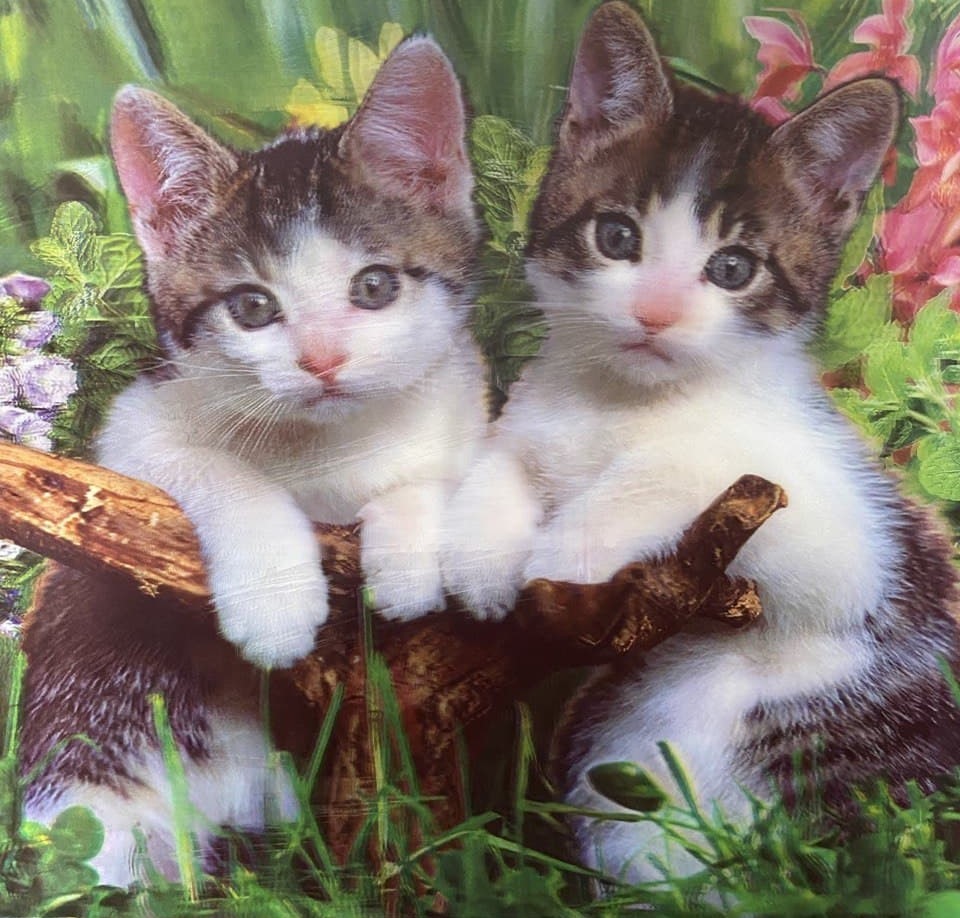

I went out with Mona for dinner today. He deemed the food at 悦龙门 as " okay ". Our conversation was kind of boring. I told him about:
Mona magicked out some tomatoes from his own tomato plant. The fruits were sour, and definitely my type of food.
We strolled around after dinner. I bought a 3D cat picture for Nicie's birthday!
Mona brought me to a old Hawker center in Chinatown. Most of the stalls were shuttered already. We walked around aimlessly before I suggested that we go home.
For some reason, I wasn't exactly being myself today. At the start, I was trying to be more upbeat. But I soon exhausted myself, so I guess I reverted back to my old self. By then, I no longer felt compelled to reply to everything he said. It was so much easier this way.